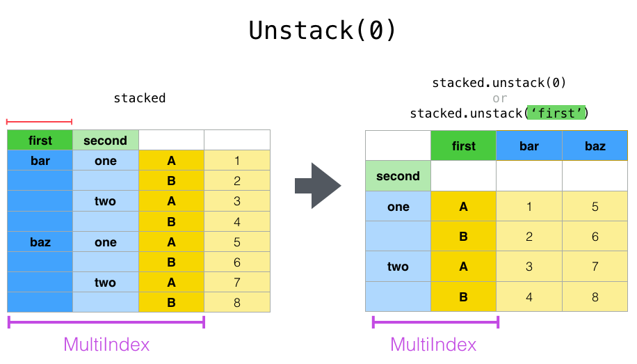
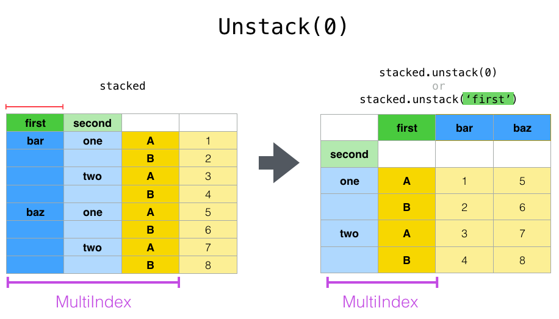

Pandas
Questions
1
2
Objectives
1
2
3
Intro
Pandas is a Python package that provides high-performance and easy to use data structures and data analysis tools. Build on numpy array, pandas is particularly well suited to analyze tabular and time series data. Although numpy could deal with structured array (array with mixed data types), it is not efficient.
The core data structures of pandas are series and dataframe. A pandas series is a one-dimensional numpy array with an index which we could use to access the data, while dataframe consists of a table of values with lables for each row and column. A dataframe can combine multiple data types, such as numbers and text, but the data in each column is of the same type.

Each column of a dataframe is a series object - a dataframe is thus a collection of series.
To load pandas:
import pandas as pd
tidy data format
Let’s first look at the following two tables:
1500m Running event
Runner 400 800 1200 1500
0 Runner 1 64 128 192 240
1 Runner 2 80 160 240 300
2 Runner 3 96 192 288 360
Runner distance time
0 Runner 1 400 64
1 Runner 2 400 80
2 Runner 3 400 96
3 Runner 1 800 128
4 Runner 2 800 160
5 Runner 3 800 192
6 Runner 1 1200 192
7 Runner 2 1200 240
8 Runner 3 1200 288
9 Runner 1 1500 240
10 Runner 2 1500 300
11 Runner 3 1500 360
Most tabular data is either in a tidy format or a untidy format (some people refer them as the long format or the wide format).
In short, in an untidy (wide) format, each row represents an observation consisting of multiple variables and each variable has its own column. This is very intuitive and easy for us (human beings) to understand and make comparisons across different variables, calculate statistics, etc. In a tidy (long) format , i.e. column-oriented format, each row represents only one variable of the observation, and can be considered “computer readable”.
Both formats have their own merits and you need to know which one suits your analysis. For example, if you are dealing with matrices, you would not want to store them as rows and columns, but as a two-dimensional array using untidy format. On the other hand, if you need to add new data or remove old data frequently from the table in a relational database, the tidy format may be the choice. Another case is that there are certain visualization tools which take data in the tidy format, e,g, ggplot, seaborn.
When it comes to data analysis using pandas, the tidy format is recommended: - each column can be stored as a vector and this not only saves memory but also allows for vectorized calculations which are much faster. - it’s easier to filter, group, join and aggregate the data
The name “tidy data” comes from Wickham’s paper (2014) which describes the ideas in great detail.
data pre-processing
In real applications, some data pre-processing have to be performed before one can perform useful analysis. There is no fixed list of what these pre-processings are, but in general the following steps are involved:
data cleaning
data reshaping
data
data cleaning
A couple of essential data cleaning processes include but not limited to the following:
data renaming
data reordering
data type converting
handling of duplicating data, missing data, invalid data
add examples https://pandas.pydata.org/docs/user_guide/missing_data.html
data Reshaping
Once data cleaning is done, we will reach the data reshaping phase. By reorganising the data, one could make the subsequent data operations easier.
pivoting
Create a data frame first
df = pd.DataFrame(
{
"foo": ["one", "one", "one", "two", "two", "two"] ,
"bar": ["A", "B", "C"] * 2,
"baz": np.linspace(1,6,6).astype(int),
"zoo": ["x","y","z","q","w","t"]
}
)
To select out everything for variable A we could do:
filtered = df[df["bar"] == "A"]
filtered
But suppose we would like to represent the table in such a way that
the columns are the unique variables from ‘bar’ and the index from ‘foo’.
To reshape the data into this form, we use the DataFrame.pivot() method (also implemented as a
top level function pivot()):
pivoted = df.pivot(index="foo", columns="bar", values="baz")
pivoted

If the values argument is omitted, and the input DataFrame has more than
one column of values which are not used as column or index inputs to pivot(),
then the resulting “pivoted” DataFrame will have hierarchical columns whose topmost level indicates the respective value
column:
df["value2"] = df["value"] * 2
pivoted = df.pivot(index="date", columns="variable")
pivoted
You can then select subsets from the pivoted DataFrame:
pivoted["value2"]
Note that this returns a view on the underlying data in the case where the data are homogeneously-typed.
Note
pivot() will error with a ValueError: Index contains duplicate
entries, cannot reshape if the index/column pair is not unique. In this
case, consider using pivot_table() which is a generalization
of pivot that can handle duplicate values for one index/column pair.
stacking and unstacking
Closely related to the pivot() method are the related stack() and unstack() methods available on Series and DataFrame. These methods are designed to work together with MultiIndex objects.
The stack() function “compresses” a level in the DataFrame columns to produce either: - A Series, in the case of a simple column Index. - A DataFrame, in the case of a MultiIndex in the columns.
If the columns have a MultiIndex, you can choose which level to stack. The stacked level becomes the new lowest level in a MultiIndex on the columns:
tuples = list(
zip(
*[
["bar", "bar", "baz", "baz", "foo", "foo", "qux", "qux"],
["one", "two", "one", "two", "one", "two", "one", "two"],
]
)
)
columns = pd.MultiIndex.from_tuples(
[
("bar", "one"),
("bar", "two"),
("baz", "one"),
("baz", "two"),
("foo", "one"),
("foo", "two"),
("qux", "one"),
("qux", "two"),
],
names=["first", "second"]
)
index = pd.MultiIndex.from_tuples(tuples, names=["first", "second"])
Note: there are other ways to generate MultiIndex, e.g.
index = pd.MultiIndex.from_product(
[("bar", "baz", "foo", "qux"), ("one", "two")], names=["first", "second"]
)
df = pd.DataFrame(np.linspace(1,16,16).astype(int).reshape(8,2), index=index, columns=["A", "B"])
df
df2 = df[:4]
df2
stacked=df2.stack()

The unstack() method performs the inverse operation of stack(), and by default unstacks the last level. If the indexes have names, you can use the level names instead of specifying the level numbers.
stacked.unstack()

stacked.unstack(1) or stacked.unstack(“second”)
 

groupby
As we know, when it is about mathematical oprations on arrays of numerical data, Numpy does best. Pandas works very well with numpy when aggregating dataframes.
Pandas has a strong built-in understanding of time. With datasets indexed by a pandas DateTimeIndex, we can easily group and resample the data using common time units.
The groupby() method is an amazingly powerful function in pandas. But it is also complicated to use and understand. Together with pivot() / stack() / unstack() and the basic Series and DataFrame statistical functions, groupby can produce some very expressive and fast data manipulations.

The workflow of groubpy method can be divided into three general steps:
Splitting: Partition the data into different groups based on some criterion.
Applying: Do some caclulation within each group. Different kinds of calulations might be aggregation, transformation, filtration
Combining: Put the results back together into a single object.
data aggregation
Here we will go through the following example
import urllib.request
import pandas as pd
header_url = 'ftp://ftp.ncdc.noaa.gov/pub/data/uscrn/products/daily01/HEADERS.txt'
with urllib.request.urlopen(header_url) as response:
data = response.read().decode('utf-8')
lines = data.split('\n')
headers = lines[1].split(' ')
ftp_base = 'ftp://ftp.ncdc.noaa.gov/pub/data/uscrn/products/daily01/'
dframes = []
for year in range(2016, 2019):
data_url = f'{year}/CRND0103-{year}-NY_Millbrook_3_W.txt'
df = pd.read_csv(ftp_base + data_url, parse_dates=[1],
names=headers,header=None, sep='\s+',
na_values=[-9999.0, -99.0])
dframes.append(df)
df = pd.concat(dframes)
df = df.set_index('LST_DATE')
df.head()
df['T_DAILY_MEAN'] # or df.T_DAILY_MEAN
df['T_DAILY_MEAN'].aggregate([np.max,np.min,np.mean])
df.index # df.index is a pandas DateTimeIndex object.
gbyear=df.groupby(df.index.year)
gbyear.T_DAILY_MEAN.head()
gbyear.T_DAILY_MEAN.max()
gbyear.T_DAILY_MEAN.aggregate(np.max)
gbyear.T_DAILY_MEAN.aggregate([np.min, np.max, np.mean, np.std])
now let us calculate the monthly mean values
gb=df.groupby(df.index.month)
df.groupby('T_DAILY_MEAN') # or df.groupby(df.T_DAILY_MEAN)
monthly_climatology = df.groupby(df.index.month).mean()
monthly_climatology
Each row in this new dataframe respresents the average values for the months (1=January, 2=February, etc.)
monthly_T_climatology = df.groupby(df.index.month).aggregate({'T_DAILY_MEAN': 'mean',
'T_DAILY_MAX': 'max',
'T_DAILY_MIN': 'min'})
monthly_T_climatology.head()
daily_T_climatology = df.groupby(df.index.dayofyear).aggregate({'T_DAILY_MEAN': 'mean',
'T_DAILY_MAX': 'max',
'T_DAILY_MIN': 'min'})
def standardize(x):
return (x - x.mean())/x.std()
anomaly = df.groupby(df.index.month).transform(standardize)
data transfromation
The key difference between aggregation and transformation is that aggregation returns a smaller object than the original, indexed by the group keys, while transformation returns an object with the same index (and same size) as the original object.
In this example, we standardize the temperature so that the distribution has zero mean and unit variance. We do this by first defining a function called standardize and then passing it to the transform method.
transformed = df.groupby(lambda x: x.year).transform(
lambda x: (x - x.mean()) / x.std()
)
grouped = df.groupby(lambda x: x.year)
grouped_trans = transformed.groupby(lambda x: x.year)
Getting help
Series and DataFrames have a lot functionality, but
how can we find out what methods are available and how they work? One way is to visit
the API reference
and reading through the list.
Another way is to use the autocompletion feature in Jupyter and type e.g.
titanic["Age"]. in a notebook and then hit TAB twice - this should open
up a list menu of available methods and attributes.
Jupyter also offers quick access to help pages (docstrings) which can be more efficient than searching the internet. Two ways exist:
Write a function name followed by question mark and execute the cell, e.g. write
titanic.hist?and hitSHIFT + ENTER.Write the function name and hit
SHIFT + TAB.
Keypoints
pandas dataframes are a good data structure for tabular data
Dataframes allow both simple and advanced analysis in very compact form